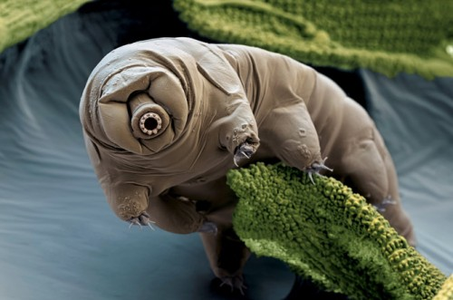
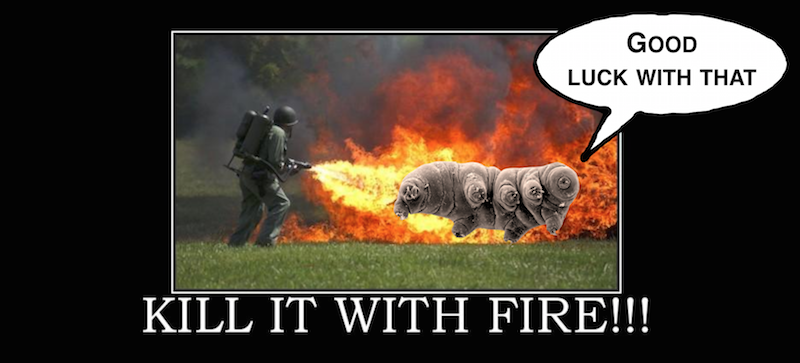
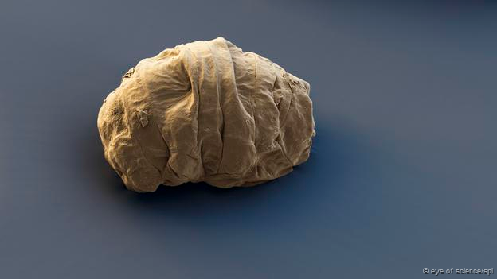
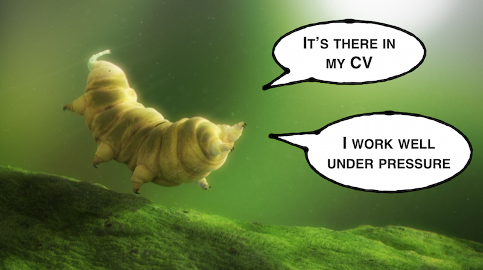

This is an archived blog post that is no longer listed. That's because this is an old post, from a previous blog I've had in this domain, years ago. I'm keeping this post up only in the interest of link preservation.
This post was originally posted on 23rd July 2015.
Is it the cat? The dog? The velociraptor? Or something completely different? This is the blog post format of the lightning talk “The most amazing animal in the world” I recently gave at FutureLearn and Thundercloud LND.
There is an animal out there that is far more amazing than anything else we might have known before. An animal that has been found in the heights of the Himalayas, the warmth of Japanese hot springs, the high pressures of the bottom of the ocean, the freezing cold of Antarctica, among other places. An animal that you’ve probably never seen before, as it’s no longer than 1.5 mm. An animal that has been on this planet far longer than we have, and that will probably remain after we’re all long gone. That animal is the water bear, also known as tardigrade, and this post will explain why it is, by far, the most amazing animal in the world.

Tardigrades have been on this planet for the last 500 million years. In comparison, humanity started 2 million years ago. Even the earliest dinosaurs (227 million years ago) are closer in time to us than to the first tardigrades. This means that the tardigrades have survived the natural disaster that pushed dinosaurs to extinction. In fact, they’ve survived all 5 mass extinctions of this planet. But how did they manage to do that?
Heat
Tardigrades are incredibly resistant to extreme heat. How extreme is that, exactly?
Most heat-tolerant organisms support up to 122 ºC. These organisms are typically simple bacteria, as more complex ones would more easily have a weak spot. Tardigrades, however, can do even better: in one experiment, they were able to support some impressive 151 ºC!

Cold
The coldest temperature ever recorded on Earth was some freezing -89.2 ºC. So animals don’t really need to worry about anything colder than that. Except for the tardigrade, which supports temperatures as low as -272 ºC! That’s about just one degree above absolute zero, the lowest temperature that can ever exist in the universe, when molecules stop moving and even gases turn into solids.
Near absolute zero, crystals start forming inside animals’ bodies. These crystals can tear apart crucial molecules like the DNA. However, tardigrades seem to be able to prevent that, thanks to their superpower:
Tun
Tardigrades have a superpower called the tun state. They can get into a state where they get rid of all the water in their bodies and their metabolism slows down to near 0%. This is like hibernation, improved. Because they replaced the water in their bodies, they can survive near absolute zero temperatures without great risk of crystals forming inside them. They can also survive in this state for many years, without the need to eat or drink.

After getting into this protective state, tardigrades only need to get in contact with water to return to their normal state and get back to business.
Pressure
Pressure, apparently, is measured with megapascals (MPa). I don’t know what 1 MPa means, and probably neither do most of you, so let’s put things in perspective:
Most systems stop metabolising and start failing at around 30 MPa. The deepest part of the sea, the Challenger Deep in the Mariana Trench (around 11 km deep), can get pressure up to 100 MPa. So that’s the strongest any living organism on Earth would need to support. The strongest bacteria, however, can manage up to 300 MPa before dying. And tardigrades? Those can support up to 600 MPa. That’s twice as much as the strongest bacteria, and 6x more than the strongest pressure on this planet!

Radiation
At this point there seems to be little left that could surprise us. These tiny animals just seem to be consistently breaking records. So how do they fare when handling radiation?
Tardigrades are able to sustain 1,000x more radiation than other animals. A thousand times more. They support up to between 5,000 and 6,200 Gy (grays, the unit for absorbed radiation), while humans, for instance, can’t take more than between 5 and 10 Gy.
This incredible resistance to radiation helps explain the next and last fact, which might well be the most impressive of them all.
Space
If the previous facts weren’t enough to convince you that we’re talking about the most amazing animal in the world, how about this one: the tardigrade was the first (and only) known animal to survive in space. And by surviving in space, I mean being left in the vacuum for days, completely exposed to solar radiation. And then returning home and successfully hatching healthy offspring. Humans, in comparison, would die in seconds, either by suffocation or due to the radiation.
So let’s recap
Tardigrades:
- survived 5 mass extinctions (and counting)
- manage up to 151 ºC
- and down to ~1 ºC above absolute zero
- which is 3x colder than the coldest place on Earth
- have an amazing superpower: the tun state
- can live years without food and water
- can handle 6x more pressure than the highest pressure on Earth
- sustain 1,000x more radiation than other animals
- are the only known animal to survive in space
And that’s why tardigrades are definitely the most amazing animal
in the world universe!
Cool links if you want to know more about them:
- The Wikipedia page on tardigrades
- A recent BBC article
- This one includes tardigrades and Neil deGrasse Tyson gifs
Update from 2024: I'm keeping this old post as archived, even though it's one of the few that I still like, both because it's off-topic for what I want my blog to be about, and because it's tightly-coupled to an event in the past (the lightning talk). Even if I do want to broaden the scope to include this topic, it will likely be as a more evergreen piece of content that isn't directly related to a specific talk.